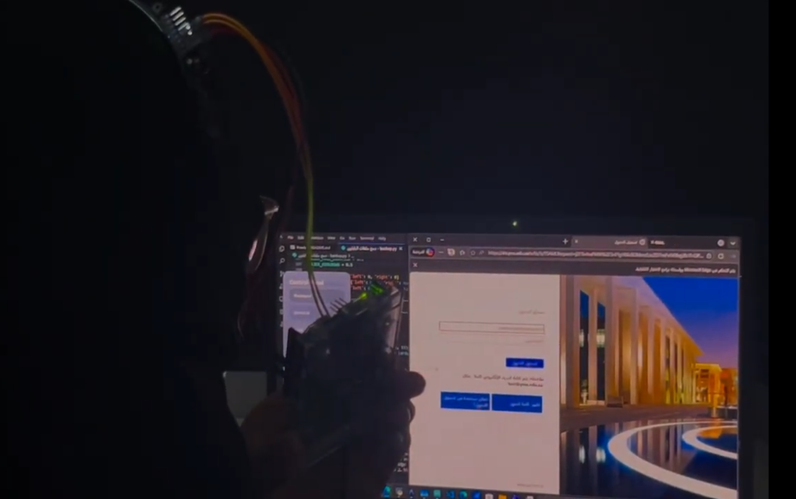

Technical Projects & System Architecture

AeroMedic – Cyber-Physical Autonomous Emergency Ecosystem
- Custom sensor PCB routing in EasyEDA (ESP32-C3, Semtech SX1262 LoRa, IMU/Biometrics) with payload casing modeled in Fusion 360.
- Low-power ESP-IDF (FreeRTOS) firmware broadcasting live patient vitals via connectionless BLE Beacon Mode (NimBLE).
- Cross-platform Flutter hub streaming emergency telemetry to MQTTS (EMQX Cloud) for low-latency emergency dispatch.
Click to inspect Sprint 1 implementation & Systems Engineering V-Model ↗

HeadTrack-Mouse – Multimodal Assistive HCI
- Fused MediaPipe Face Mesh (60 FPS) with an Arduino + MPU-6050 for decoupled XY-axis cursor tracking (<10ms latency)[cite: 1].
- Deployed an ESP32 with an I2S mic (INMP441) using VAD for hands-free screen boundary locking[cite: 1].
- Built a PyQt6 dashboard with Selenium automation and a custom AI-driven Smart Study Assistant[cite: 1].
Click to inspect system demo, control panel & study app ↗
Hujou3 – Distributed Ambient Intelligence & Hardware Hub
- Architected a 3-tier distributed system separating ESP32 I2S audio sensing, Python NLP (921.6k baud), and an Arduino R4 WiFi hub.
- Engineered an embedded 9-state FSM controlling local peripherals and Tuya Cloud smart lighting via HTTPS/TLS and HMAC-SHA256.
- Secured local JSON HTTP endpoints using token authentication and anti-replay protection (within 5 seconds) with mDNS.
Click to inspect live demo videos & system protocol ↗